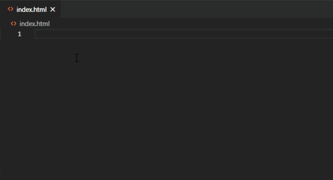

caveat: I am not a physicist, computer scientist, software engineer, or web developer. Once upon a time I knew some math, but now I am mostly just an intensely curious person. I've learned enough to make this work, and now I'd like to share it with you.
We will be building a simulator that runs on a webpage and animates the movement of an n-tuple pendulum.
We will be building a simulator that runs on a webpage and animates the movement of an n-tuple pendulum.
Great question! Regular, single pendulums are a simple physical system that can be solved analytically (I think). Probably very good for learning the basics of physical modeling and simulation, but pretty boring.
Double pendulums are also a reasonably simple physical system to describe, but they are an example of a chaotic system. Mathematically, this means that they show sensitive dependence to initial conditions.. Visually, this means they look hypnotically awesome. However, there are thousands of double pendulum simulators out there.
Triple pendulums have pretty gnarly equations of motion when you solve for them directly, and it's not that much more work to just solve for the general case and set \(n = 3\), so we might as well just do the little bit of extra work and figure out the general case.
To simulate the movement of some physical system, we want to be able to take any snapshot of time and predict where it will move next (and how fast). For example, if we toss a ball into the air, after it leaves our hand, at any given snapshot of time, the ball has some position (where it is), velocity (how fast it's going), and acceleration (how the velocity is changing). With that information, we can predict where the ball will be a short time after. If the ball is 2 meters (6.56 feet) in the air and moving straight up at 1 meters per second (6.71 mph), then one tenth of a second later, it will be approximately 2.1 meters (6.89 feet) in the air. We can get an even better approximation if we include the acceleration, but more on that later.
For a given physical system, if we had a function that took in any given time value and spit out the positions of elements in the physical system, we'd be done! All we'd have to do then is draw the points of the physical system at their starting point, increase the time value a little bit, and then redraw the points of the physical system at their new locations, and do that fast enough to make it look like it's moving.
Unfortunately, we rarely have a function that just tells us the position at a given time. Instead, what we can do is figure out rules to describe what is happening for every possible snapshot of the physical system (that is, the position of all the points in the system, their velocity, and their acceleration), and use that to determine the next snapshot. One way of defining those rules is called Lagrangian mechanics.
It's about to get heavy with math formulas pretty soon, so before we jump into Lagrangian mechanics, so let's be clear about the notation we're using before moving on. Also, we're going to be relying on quite a bit of calculus, so if you aren't familiar with calculus, the math section is going to make a lot of logical jumps that probably won't make sense to you. If you want to go research calculus on your own, the topics we'll be using are the sum rule, the power rule, the product rule, the chain rule, derivatives of sine and cosine, and partial derivatives. At the end, we will also be referring to a little bit of linear algebra to describe our equations of motion as a matrix equation \(A \boldsymbol{x} = \boldsymbol{b}\).
In Lagrangian mechanics, we start with the difference of the kinetic energy (\(T\)) and the potential energy (\(V)\) of the physical system. This difference is called the Lagrangian (\(L = T - V\)). The kinetic energy of a system is defined as \(\frac{1}{2}\sum_{i=1}^{n}m_iv_i^2\) where \(m_i\) is the mass of each object (the \(i\) is an index to keep track of each obect) and \(v_i^2\) is the squared magnitude of the velocity of each object. For pendulum systems, we're only going to worry about the gravitational potential energy. If two objects have the same mass, but one is higher up than the other, then the object that is higher up has more gravitational potential energy. If two objects are at the same height, but one is more massive than the other, then the more massive object has more gravitational potential energy. We will represent this with the definition \(V = \sum_{i=1}^{n} gm_iy_i\) where \(g\) is the acceleration factor due to gravity, \(m_i\) is still the mass of each object, and \(y_i\) is the y‑position, or height, of each object.
With the Lagrangian \(L\) defined, we use the following Euler-Lagrange equations to give us the equations of motion of the system: $$ \frac{d}{dt}\left(\frac{\partial L}{\partial \dot{q}_i}\right) = \frac{\partial L}{\partial q_i} $$ where \(q_i\) represents some point in the system. Note: the Lagrangian may be defined in terms of abstract quantities in a phase space describing the system. For example, we will be using the phase space of angles and angular velocities in our formulation for the n-tuple pendulum.
Now we are ready to describe the equations of motion for the n-tuple pendulum.
For this simulation, we are describing a frictionless physical system of rods with zero mass and \(n\) bobs of equal mass. This means that the \(n\) bobs are the only point masses of the system. For ease of calculation, the length of each rod and the mass of each bob are defined as \(1\) appropriate arbitrary unit. The gravitational constant \(g\) is defined as \(-9.8\) meters per second per second.
Figure 1 shows how we will define the coordinates of each bob based on the angles of each rod.
The \(x\) and \(y\) coordinates of each bob are defined as follows: $$x_i = \sum_{j=1}^i\sin\theta_j, \quad y_i = -\sum_{j=1}^i\cos\theta_j$$ $$\dot{x}_i = \sum_{j=1}^i\dot{\theta}_j\cos\theta_j, \quad \dot{y}_i = \sum_{j=1}^i\dot{\theta}_j\sin\theta_j$$
The kinetic energy of the system is defined as follows: $$\begin{eqnarray} T &=& \frac{1}{2}\sum_{i=1}^n m_i v_i^2 \\ &=& \frac{1}{2}\sum_{i=1}^n(\dot{x}_i^2 + \dot{y}_i^2) \\ &=& \frac{1}{2}\sum_{i=1}^n \left( \left[\sum_{j=1}^i\dot{\theta}_j\cos\theta_j\right]^2 + \left[ \sum_{j=1}^i\dot{\theta}_j\sin\theta_j \right]^2 \right) \\ &=& \frac{1}{2}\sum_{i=1}^n \left(\sum_{j=1}^n\dot{\theta}_j^2 + \sum_{j \neq k}2\dot{\theta}_j\dot{\theta}_k\cos\theta_j\cos\theta_k + \sum_{j \neq k}2\dot{\theta}_j\dot{\theta}_k\sin\theta_j\sin\theta_k\right) \\ &=& \frac{1}{2}\sum_{i=1}^n \left(\sum_{j=1}^n\dot{\theta}_j^2 + \sum_{j \neq k}2\dot{\theta}_j\dot{\theta}_k\cos(\theta_j - \theta_k) \right) \\ &=& \sum_{i=1}^n \left(\sum_{j=1}^n\frac{1}{2}\dot{\theta}_j^2 + \sum_{j \neq k}\dot{\theta}_j\dot{\theta}_k\cos(\theta_j - \theta_k) \right) \end{eqnarray}$$
The potential energy of the system is defined as follows: $$\begin{eqnarray} V &=& \sum_{i=1}^nm_igy_i \\ &=& -g\sum_{i=1}^n\sum_{j=1}^i\cos\theta_j \\ &=& -g\sum_{i=1}^n(n-i+1)\cos\theta_i \\ \end{eqnarray}$$
Thus the Lagrangian of the n-tuple pendulum is $$\begin{eqnarray} L &=& T - V = \sum_{i=1}^n \left(\sum_{j=1}^n\frac{1}{2}\dot{\theta}_j^2 + \sum_{j \neq k}\dot{\theta}_j\dot{\theta}_k\cos(\theta_j - \theta_k) \right) + g\sum_{i=1}^n(n-i+1)\cos\theta_i \\ \end{eqnarray}$$
Now we use the Euler-Lagrange equations: $$\frac{d}{dt}\left(\frac{\partial L}{\partial \dot{\theta}_i}\right) - \frac{\partial L}{\partial \theta_i} = 0$$
For the first term, we start by taking the partial derivative of the Lagrangian with respect to the angular velocities: $$\frac{\partial L}{\partial \dot{\theta}_i} = \sum_{j=1}^{n}c(i,j)\dot{\theta}_j\cos(\theta_i - \theta_j), \quad c(i, j) = n - \max(i, j) + 1$$ Then we take the derivative of that result with respect to time: $$\frac{d}{dt}\left(\frac{\partial L}{\partial \dot{\theta}_i}\right) = \sum_{j=1}^{n}c(i,j)\left[\ddot{\theta}_j\cos(\theta_i - \theta_j) - \dot{\theta}_i\dot{\theta}_j\sin(\theta_i - \theta_j) + \dot{\theta}_j^2\sin(\theta_i - \theta_j) \right]$$
Now, we will derive the second term of the Euler-Lagrange equation, taking the partial derivative of the Lagrangian with respect to the angles of the rods. $$\frac{\partial L}{\partial \theta_i} = -g(n - i + 1)\sin\theta_i - \sum_{j=1}^nc(i,j)\dot{\theta}_i\dot{\theta}_j\sin(\theta_i - \theta_j)$$
Finally, we can fill in both terms of the Euler-Lagrange equations. $$\begin{eqnarray} && \frac{d}{dt}\left(\frac{\partial L}{\partial \dot{\theta}_i}\right) - \frac{\partial L}{\partial \theta_i} = 0 \\ &\implies& \sum_{j=1}^{n}c(i,j)\left[\ddot{\theta}_j\cos(\theta_i - \theta_j) - \dot{\theta}_i\dot{\theta}_j\sin(\theta_i - \theta_j) + \dot{\theta}_j^2\sin(\theta_i - \theta_j) \right] + g(n - i + 1)\sin\theta_i + \sum_{j=1}^nc(i,j)\dot{\theta}_i\dot{\theta}_j\sin(\theta_i - \theta_j) = 0 \\ \end{eqnarray}$$ After doing some careful algebra on the terms, moving any term with a second derivative of the angles to the left-hand side, and any term without to the right-hand side, we get: $$\begin{eqnarray} && \sum_{j=1}^{n}c(i,j)\left[\ddot{\theta}_j\cos(\theta_i - \theta_j) + \dot{\theta}_j^2\sin(\theta_i - \theta_j) \right] + g(n - i + 1)\sin\theta_i = 0 \\ &=& \sum_{j=1}^{n}c(i,j)\ddot{\theta}_j\cos(\theta_i - \theta_j) = -\sum_{j=1}^{n}\left[c(i,j)\dot{\theta}_j^2\sin(\theta_i - \theta_j)\right] - g(n - i + 1)\sin\theta_i \end{eqnarray}$$
The equations of motion can be written as a matrix equation \(A \boldsymbol{x} = \boldsymbol{b}\) where
Remember, we are using the phase space of angles (\(\theta_i\)) and angle velocities (\(\dot{\theta}_i\)) to represent the possible states of the n-tuple pendulum system. To approximate the next state, we'll need the derivatives: \(\dot{\theta}_i\) and \(\ddot{\theta}_i\). Luckily, if we know the current state, we know the \(\dot{\theta}_i\), and we can solve the matrix equation we just defined to get the \(\ddot{\theta}_i\).
For the next bit, we'll need a function \(f\) that takes in the current state of the n-tuple pendulum and returns the derivates, that is $$ f \left( \begin{matrix}\theta_1 \\ \vdots \\ \theta_n \\ \dot{\theta}_1 \\ \vdots \\ \dot{\theta}_n \end{matrix} \right) = \left( \begin{matrix}\dot{\theta}_1 \\ \vdots \\ \dot{\theta}_n \\ \ddot{\theta}_1 \\ \vdots \\ \ddot{\theta}_n \end{matrix} \right) $$
You might be thinking that we can find the next state of the pendulum system by taking a small change in time (\(\Delta t\)), multiplying the derivatives of the state values by \(\Delta t\), and adding the resulting changes to the current state values. In other words (or at least a lot of notation), $$ \left( \begin{matrix}\theta_1 \\ \vdots \\ \theta_n \\ \dot{\theta}_1 \\ \vdots \\ \dot{\theta}_n \end{matrix} \right) \rightarrow \left( \begin{matrix}\theta_1 \\ \vdots \\ \theta_n \\ \dot{\theta}_1 \\ \vdots \\ \dot{\theta}_n \end{matrix} \right) + \Delta t \left( \begin{matrix}\dot{\theta}_1 \\ \vdots \\ \dot{\theta}_n \\ \ddot{\theta}_1 \\ \vdots \\ \ddot{\theta}_n \end{matrix} \right) $$ If so, you're thinking along the same lines as one of the greatest mathematicians ever, but unfortunately, because the n-tuple pendulums are chaotic systems, we will need a more sophisticated method. We will be using the 4th order Runge-Kutta (RK4) method. To keep notation compact, lets define \(s_t\) to be the state at time \(t\). We can then rewrite the previous expression as $$ s_{t + \Delta t} = s_{t} + \Delta tf(s_t) $$
We won't go into the details of RK4 or exactly how it works (the rough idea is that it takes weighted averages of slopes across the \(\Delta t\) interval), but the process is as follows: $$ \begin{eqnarray} k_1 &=& f(s_t) \\ k_2 &=& f(s_t + \frac{\Delta t}{2} k_1 ) \\ k_3 &=& f(s_t + \frac{\Delta t}{2} k_2 ) \\ k_4 &=& f(s_t + \Delta tk_3 ) \end{eqnarray} $$ $$ s_{t + \Delta t} \approx \frac{\Delta t}{6}(k_1 + 2k_2 + 2k_3 + k4) $$
With that, we have everything we need to start coding the n-tuple pendulum simulation in JavaScript. Whew!
Note, if you want to jump ahead and see how this is coded, the pendulum at the top of the page is using the example code!
For this section, we're going to write all of our code for the browser, which means all you need is a text editor (I recommend Visual Studio Code, which is free and works well on Mac and Windows), and a browser, which you're probably using to view this page (if you're on a phone or tablet, I suggest you go to a computer. If you know how to code on a mobile device, you probably don't need my help at this point.)
I'm assuming you've done some coding before, so if you haven't, you might want to search for a "Hello World" tutorial in JavaScript to get started. I highly recommend the Mozilla Developer Network (MDN) Web Docs as a reference for all things HTML, CSS, and JavaScript.
I recommend creating a coding projects folder that you can get to easily, preferably in your home/user directory. In that folder, create a new folder called
pendulum, and create a new file inside of it named index.html. Open index.html inside your text editor, and paste the
following HTML code, and save.
<!DOCTYPE html>
<html lang="en">
<head>
<meta charset="UTF-8">
<meta http-equiv="X-UA-Compatible" content="IE=edge">
<meta name="viewport" content="width=device-width, initial-scale=1.0">
<script src="https://cdnjs.cloudflare.com/ajax/libs/mathjs/9.3.2/math.min.js"></script>
<title>Pendulum Simulator</title>
</head>
<body>
<canvas id="canvas" width="500" height="500"></canvas>
<script src="pendulum.js"></script>
<script src="index.js"></script>
</body>
</html>
Note that in VS Code, most of this code is boilerplate code that can be created with the Emmet
abbreviation !.

This HTML code does the following:
head, body, title, etc.),pendulum.js and index.jspendulum.js file will contain all the code that handles the pendulum simulation math, and index.js will contain all the code
responsible for displaying and animating the simulation in our browser. We will create those files now, starting with pendulum.js.
We'll be using JavaScript classes to define, in code, what it means to be an n-tuple pendulum. We'll be using the class to store properties that the system needs, like the number of bobs \(n\), the current state of the pendulum, and even the gravitation constant. We'll also define functions, or methods, like creating the \(A\) matrix for each state, and the coordinates of the bobs. Let's start with a skeleton of everything that we'll need, and fill in the details one-by-one.
class Pendulum {
constructor() {
}
A() {
}
b() {
}
f() {
}
RK4() {
}
tick() {
}
get coordinates() {
}
}
We'll be using this class to create an instance of a pendulum. The constructor() method will define how the instance is constructed and store the
starting state of the system. The other methods perform the following tasks:
A() method will create the matrix \(A\) from our equations of motion,b() method creates the vector \(b\) from our equations of motion,f() method calculates the derivative of the current state values,RK4() method performs the Runge-Kutta algorithm,tick() method updates the state of the system,coordinates() method returns the coordinates of the bobs.